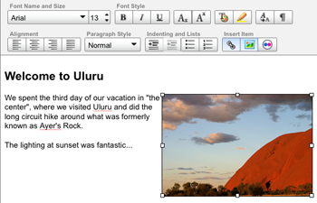
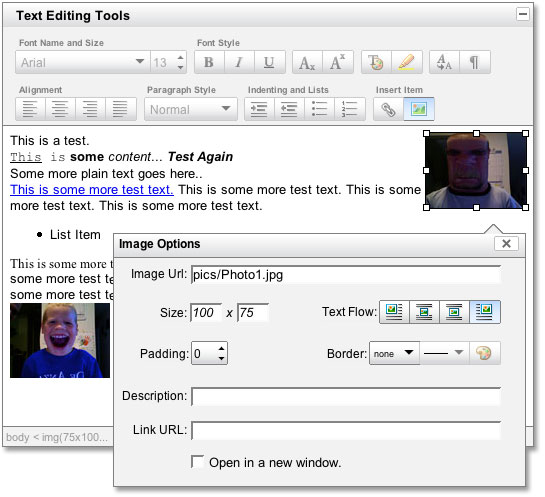
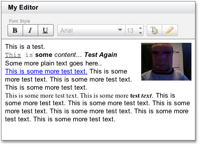

Rich Text Editor
The Rich Text Editor is a UI control that replaces a standard HTML textarea; it allows for the rich formatting of text content, including common structural treatments like lists, formatting treatments like bold and italic text, and drag-and-drop inclusion and sizing of images. The Rich Text Editor's toolbar is extensible via a plugin architecture so that advanced implementations can achieve a high degree of customization.
In order to give you the greatest possible control over the size and performance of the Rich Text Editor codebase, we provide two versions of the Editor module and two versions of the buttons that live on the Toolbar:
- Editor: Editor contains all features described on this page;
- SimpleEditor: SimpleEditor contains a subset of Editor's features. (See "Choosing Between Editor and SimpleEditor" for more details.)
- ToolbarButtonAdvanced: The advanced Toolbar buttons are based on YUI Buttons; they are more richly featured at the cost of more dependencies.
- ToolbarButton: The more simple Toolbar buttons have fewer dependencies and so are lighter on the page; they do not support progressive enhancement nor menu-button functionality. (See "Changing the Toolbar" for more about your Toolbar choices.)
Choose the right combination of features in your Editor and Toolbar to get the right tradeoff between size and richness for your application.
Video: Rich Text Editing with YUI
In this 36 minute video, YUI Rich Text Editor author Dav Glass takes you on a guided tour of the component, including both how to use and how to extend the base functionality. [iPod/iPhone compatible download also available.]
Getting Started
To use the Editor, include the following source files in your web page:
To use the SimpleEditor, include the following source files in your web page:
Using the Rich Text Editor
This section describes several common uses of the Rich Text Editor. It contains these subsections:
- Choosing Between Editor and SimpleEditor
- Rendering the Editor
- Rendering the SimpleEditor
- Getting the data from the Editor
- Changing the Toolbar
- Listening for Events
- Dynamic Events
- Plugins
- Overriding execCommands
- Toolbar Interactions
- Showing and Hiding
- Skinning the Editor
Choosing Between Editor and SimpleEditor
The SimpleEditor Control is a smaller more basic version of the Editor Control. Most of the editing features found in the main Editor Control exist in the SimpleEditor version. However a few were removed:
- Advanced Image editing — replaced with a simple Javascript prompt
- Advanced Link editing — replaced with a simple Javascript prompt
- Advanced Drop Down Menus — replaced with standard HTML Select Elements
- Header editing
- Removing of Format
- Superscript & Subscript
- Indenting & Outdenting
- No support for
YAHOO.widget.EditorWindow— The floating panels used for image and link editing
The major difference between the two editors are their dependencies.
SimpleEditor's dependencies are:
Rendering the Editor
The Rich Text Editor is designed to replace an existing HTML <textarea> control. Users whose browsers do not support JavaScript will therefore see a standard <textarea> in place of the Rich Text Editor. The base markup for this approach is as follows:
With this markup in place, the JavaScript to instantiate the Rich Text Editor involves a simple constructor to which is passed a configuration object. Once instantiated, you use the render method to place the Rich Text Editor on the page:
The full list of configuration options that you can pass in your constructor can be found in the API documentation.
With the simple markup and script above, and including the skin stylesheet for Rich Text Editor, you will see rendered to your page a rich control that looks like this:
Rendering the SimpleEditor
You render the SimpleEditor Control the same as the Editor Control, only you call the SimpleEditor constructor instead.
With the simple markup and script above, and including the skin stylesheet for Rich Text Editor, you will see rendered to your page a rich control that looks like this:

Getting the data from the Editor
There are a couple of ways to get the data from the editor. The first way is to let the Editor do it for you by setting the handleSubmit configuration option.
Setting the handleSubmit configuration option, the Editor will attempt to attach itself to its parent form's submit event. Then it will call its saveHTML method, then proceed with the form submission.
The manual way, is to call the saveHTML method yourself. Like this:
Changing the toolbar
The default toolbar included with the editor makes every currently supported feature available by default. You can override this config before the editor is rendered by passing in an object literal of a new toolbar to the constructor.
See this example for the full toolbar config
The Editor's Toolbar supports 2 types of buttons: advanced and basic.
Note: To use the advanced button type you will need to make sure you include the Menu and Button Controls.
The following are advanced button types:
- Push: Push buttons are provided via the YUI Button Control.
- Menu: Menu buttons are provided via the YUI Button Control.
- Select: The Select button is a hybrid of the menu button that mimics an HTML
<select>element. - Color: The Color button is another hybrid menu button that contains an interactive color picker; note that this color picker is not an implementation of the YUI Color Picker Control but rather a dedicated text-editing control optimized for styling text.
- Spin: The Spin button is a hybrid of a Push button that adds a pair of up and down arrows to the side of the button. It is generally used to allow the user to select a value from a range of numeric values. Selecting one of the buttons causes the value to "spin" up and down the range of possible values.
- Separator: The Separator button gives you a way to place a bar ("|") in between two buttons. The separator bar is also given a unique classname so you can use it to style the toolbar as needed.
The following are basic button types:
- Push: Push buttons are provided via the default toolbar.
- Menu: Menu buttons are provided via the default toolbar.
- Select: The Select button is an HTML
<select>element. - Color: The Color button is a hybrid menu button that contains an interactive color picker; note that this color picker is not an implementation of the YUI Color Picker Control but rather a dedicated text-editing control optimized for styling text.
- Spin: The Spin button is a hybrid of a Push button that adds a pair of up and down arrows to the side of the button. It is generally used to allow the user to select a value from a range of numeric values. Selecting one of the buttons causes the value to "spin" up and down the range of possible values.
- Separator: The Separator button gives you a way to place a bar ("|") in between two buttons. The separator bar is also given a unique classname so you can use it to style the toolbar as needed.
Example code for each of these button types is included in the toolbar section above. You can also see a few examples of using the different button types in the Editor's example section.
With the above code you would get an Editor that looked like this:
Events
The Rich Text Editor and the Toolbar are both loaded with Custom Events to which you can subscribe as you customize the editor's behavior to suit the specific needs of your application.
Some of the more common Rich Text Editor events include the following; for a full list, including the arguments passed to each event, see the API documentation for Rich Text Editor:
SimpleEditor Events
- Editor Render Events
toolbarLoadedafterRendereditorContentLoaded
- Editor HTML Event Mapping
editorMouseUpeditorMouseDowneditorDoubleClickeditorKeyUpeditorKeyPresseditorKeyDown
- Editor Command Execution Events
beforeNodeChangeafterNodeChangebeforeExecCommandafterExecCommand
- Toolbar Events (accessed via
EditorObj.toolbar.on())toolbarExpandedtoolbarCollapsedcolorPickerClickedcmdClick(dynamic event)menucmdClick(dynamic event)buttonClick
Editor Events
- Editor Render Events
toolbarLoadedafterRendereditorContentLoaded
- Editor HTML Event Mapping
beforeEditorMouseUpeditorMouseUpbeforeEditorMouseDowneditorMouseDownbeforeEditorClickeditorClickbeforeEditorDoubleClickeditorDoubleClickbeforeEditorKeyUpeditorKeyUpbeforeEditorKeyPresseditorKeyPressbeforeEditorKeyDowneditorKeyDown
- Editor Command Execution Events
beforeNodeChangeafterNodeChangebeforeExecCommandafterExecCommand
- Editor Window Events
beforeOpenWindowafterOpenWindowcloseWindowwindowCMDOpen(dynamic event)windowCMDClose(dynamic event)windowRenderwindowInsertImageRenderwindowCreateLinkRender
- Toolbar Events (accessed via
EditorObj.toolbar.on())toolbarExpandedtoolbarCollapsedcolorPickerClickedcmdClick(dynamic event)menucmdClick(dynamic event)buttonClick
Dynamic Events
Dynamic Events are special CustomEvent's that are dynamically created based on the value of a button in the Toolbar.
For example, if you had a button called "bold" you will be able to listen for the "boldClick" event or if you had a button called "foo", you would be able to listen for the "fooClick" event.
These events are best described with the following code:
Please refer to the API documentation for a full list of Custom Events that are available for the Rich Text Editor.
Plugins
The Rich Text Editor's toolbar has a flexible plugin architecture that allows you to customize the editor's behavior for the purposes of your own application.
The example below will add a new button to the default toolbar. When this custom button is clicked it will insert the following HTML: "<b>This is the text to insert.</b>" But the button will only be enabled if the user has focused a <div>, so this text will never be inserted into an element within the editor other than a <div>.
Overriding execCommands
The Rich Text Editor uses a method based approach for applying execCommand commands on selected text/elements. For example, when you call myEditor.execCommand('forecolor', 'FF0000');, the editor actually calls an internal method called cmd_forecolor.
This method will then process the command and act on it. It will return an array telling the execCommand method whether it should or should not execute the document.execCommand method.
Below is an example of the cmd_forecolor method.
Using this technique, you can add support for your own execCommands, or change the way that the Editor handles them.
Toolbar Interactions and the nodeChange Event
If you're intereseted in extending the Toolbar with custom buttons (see the Flickr and Calendar examples that do this), the following section contains important information.
The nodeChange event is your way of knowing when an interesting moment occurs inside of the Editor. Keep in mind that the editing canvas itself (the place where the user is inputting rich text) is, under the hood, an HTML document loaded within an iframe with designMode turned on — which is to say it has a DOM full of nodes. When the user is typing, she is adding to a single DOM node. But when she mouses to a new location, selects new texts, or performs any other action that changes the cursor's current position in the DOM, the nodeChange event fires to let you know that the user appears to be performing an interesting action. Common user actions that can fire nodeChange include mousedown, mouseup, arrow keys and other keypress events.
When a nodeChange event is fired off via an internal editor event (or by manually calling myEditor.nodeChange() in your own script), all of the Toolbar's buttons need to update their status to reflect the new state of the user's editor. All of the buttons that ship with the Rich Text Editor fall into one of three groups:
- Can be enabled or disabled depending on the state of the editor. This group is enabled when the user has selected content in the editor and disabled when the user is merely typing.
- Always enabled. The "show hidden elements" button, for example, is always enabled.
- Always disabled. By default, there are no buttons that are always disabled; under some specific circumstances, there may be times when you want to place a custom button in this category (eg, if you've added a feature that is not always available to all users).
The Toolbar goes through the following states in updating its buttons:
- Loop through the
_disabledarray (that is, the list of buttons that should be disabled when there is no selected content in the editor) and... - ...if there is no selection then:
- Disable all buttons in the array.
- If there is a selection then:
- Enable each button NOT in the
_alwaysDisabledobject. - If a button is NOT in the
_alwaysEnabledobject, it will deselect the button.
- Enable each button NOT in the
For custom buttons that you add to the Editor, it is best practice to subscribe to the afterNodeChange event and update your button's enabled/disabled state at that time. See the Calendar example for sample code that allows you to do this.
Showing and Hiding the Editor
The Rich Text Editor includes two convenience methods used when showing and hiding the editor. The methods are show() and hide().
These methods do not control the display properties of the editor. They are designed to plugin to an event given by the editor's parent container. See the Editor inside a TabView control example here for more information.
By setting the editor's container or a parent element of the editor to display none, the editor can become un-responsive. So using the show method will allow the editor to fix itself and start behaving again. On the other hand, you don't want the editor doing any processing when it is hidden. So calling the hide method will close all open editor windows and stop all background processes and timers.
A simple example of using the show and hide events on a Container Control
Skinning the Editor
The Rich Text Editor comes with a default presentation or "skin," part of the "Sam Skin" visual treatment that accompanies most YUI controls. You can read more about the general approach to skinning YUI components in this in-depth article.
The CSS provided with the Rich Text Editor is comprised of core, functional CSS as well as the Sam Skin visual treatment.
To explore the CSS which controls the Rich Text Editor's presentation, please review the Rich Text Editor's Skinning Example wherein the full CSS for the control is displayed.
For your convenience we have provided the Rich Text Editor's sprite PSD file in a zip available here.
The YUI Rich Text Editor does not currently support the iPhone or the Nokia N95. Due to the interaction model (specifically, the inability to make a selection), the Editor will not function as expected. In our tests, it appears that the Apple and Nokia Webkit implementations don't event recognize the Editor as an editing field — meaning that these browsers are, at present, deliberately not supporting the use of an iframe in design mode.
The best way to get around this is to not render the Editor when you come across one of these browsers. Take a look at this example of browser detection in the Yahoo Global Object for ways of doing that.

More Reading about the YUI Rich Text Editor
- Example: Editor in a Dialog Control
- YUI Rich Text Editor for Drupal, by Jeff C. Decker (and others)
- Some Notes on the YUI Rich Text Editor, by RTE author Dav Glass
- Yahoo! Pages - William Duff - (UICU) Univerisity Hack Day Winner
- YUI Rich Text Editor for blog comments, by Niall Kennedy
- Support rich text with the Yahoo! User Interface Library, by Tony Patton, TechRepublic
- An Image Upload Extension for YUI Rich Text Editor. by Dennis Muhlestein